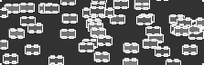

Processing.R Tutorials. A collection of step-by-step lessons introducing Processing (with R).
Many of these tutorials were directly translated into R from their Java counterparts by the Processing.R documentation team and are accordingly credited to their original authors. Please report any mistakes or inaccuracies in the Processing.R documentation GitHub.
Welcome to Processing! This tutorial covers the basics of writing Processing code in R mode. Level: Beginner |
Drawing simple shapes and using the coordinate system. Level: Beginner |

The basics of object-oriented programming. Level: Intermediate |